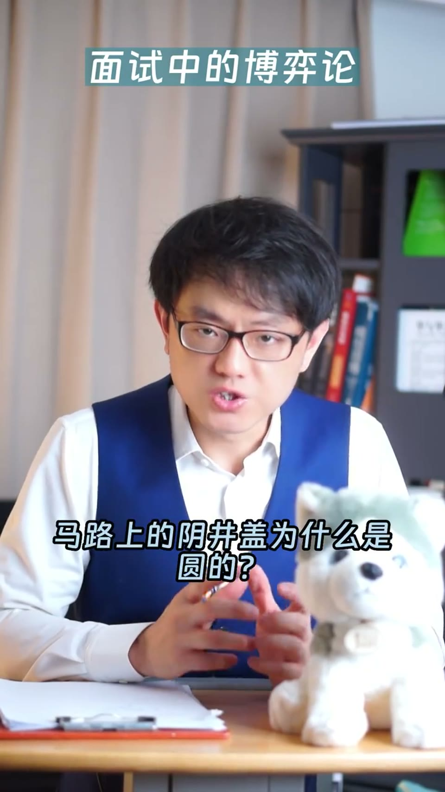

内容要点
一支 2 分钟的思维课：解析微软经典面试题「马路上的井盖为什么是圆的」为什么用了十几年还在考。答案网上随便搜就有，但面试官真正考的是博弈论——看似考 A 其实考 B。三层用意：博弈论的后手考验诚信、工程问题要从多角度解释、以及判断面试者的思维深度。
知识结构
答案网上随便搜就有，面试官一定知道——为什么还用？答案是博弈论。
A猜B会怎么做并留后手，B猜A及A的后手，A继续猜B可能猜到——后手背后还有后手。
面试官会说「知道答案就直说，我们跳过下一题」——背过答案却说不知道的，诚信亮黄牌。
第一考诚信；第二考多角度解释（产品设计/机械制造/建筑工程）；彩蛋：坚持说方盖好的哥们被录进销售部。
好的面试题内嵌博弈论——看似考 A 其实考 B。井盖题的答案是诚信、多角度思维与工程素养的试探。
00:00-00:22一道网上有答案的面试题
开场设问：「为什么微软在十几年后依然用这道题来面试工程师——马路上的井盖为什么是圆的？答案你一定知道，网上随便搜一下就有。」
「可问题是，微软出面试考题的人，难道不知道网上有这道题的答案吗？他们一定知道的。那为什么还会用这道题来面试呢？答案是博弈论。」

00:22-00:55博弈论的后手：考验诚信
不讲数学公式地解释博弈论：第一步，A 猜 B 会怎么做，然后事先留好后手；第二步，B 猜 A 会怎么做，以及 A 可能的后手是什么；第三步，A 继续猜 B 可能会猜到 A 的后手是什么——所以后手背后还有后手，以此类推。
「那微软这道题的后手是什么？是诚信。」微软当然知道面试者已经知道答案，所以面试官会先说：如果你知道某道题的答案，请如实跟我说，我们直接跳过看下一题。
而如果面试者被问到「马路上的井盖为什么是圆的」，想都没想直接就说「方的容易掉下去」——此时面试官就会对面试者的诚信亮出一个黄牌。他只要接着再问一句「很好，还有吗」，面试者如果只是背过刷题答案就会立刻懵掉。
00:55-01:52多角度解释与三层用意
网上答案只有一条，但工程学上还有其他解释：比如生产环节中圆形的井盖比方形的更容易生产——圆形只有一个半径尺寸，方形有长和宽两个尺寸；另外挖一个圆形的洞，要比挖方形的洞简单。
所以微软到现在还考「马路上的井盖为什么是圆的」有三层用意：第一，博弈论的后手考验面试者的诚信；第二，工程问题要从多个角度来解释——刚才说的三个理由分别是从产品设计、机械制造和建筑工程三个角度，这是微软需要的工程师素质。
彩蛋：「在微软的朋友告诉我，真的有人坚持说方井盖比圆的好，而且讲出来有理有据，后来这哥们居然被录用了，然后被送到销售部门去了。」
总结：「好的面试题就应该是这样，内嵌博弈论，看起来是考 A，其实是考 B。我根据这个原则也创作过类似的面试题。」
完整转录（60段）
以下文本由 Whisper medium 模型自动转录，可能存在少量识别误差，已尽可能修正。
為什麼微軟在十幾年後依然用這道題來面試工程師
馬路上的陰莖該為什麼是圓的
答案你一定知道
網上隨便搜一下就有
可問題是微軟出面試考題的人
難道不知道網上有這道題的答案嗎
他們一定知道的
那為什麼還會用這道題來面試呢
答案是博弈論
如果不用複雜的數學公式
可以這麼解釋博弈論
第一步A猜B會怎麼做
然後事先留好後手
第二B猜A會怎麼做
以及A可能的後手是什麼
第三步A繼續猜
B可能會猜到A的後手是什麼
所以後手背後還有後手
以此類推
那微軟這道題的後手是什麼
是誠信
微軟當然知道面試者已經知道這道題的答案
所以在面試前面試官會跟面試者說
如果你知道某道題的答案
請如實跟我說
我們直接跳過看下一集
而如果面試者在被問到馬路上陰莖該為什麼是圓的
想都沒想直接就說
方的容易掉下去
此時面試官就會對面試者的誠信亮出一個黃牌
他只要接著再問一句話就能確定了
嗯很好還有嗎
此時面試者如果只是網上背過刷題答案就會立刻懵掉
怎麼回事網上答案就只有一條
不對工程學上還有其他解釋
比如生產環節中圓形的莖蓋比方形的更容易生產
因為圓形只有個半形尺寸
方形有長和寬兩個尺寸
另外挖一個圓形的洞
圓比要挖一個方形的洞要簡單
所以微軟到現在還是考馬路上的陰莖該
為什麼是圓的有三層容易
第一博弈論的後手考驗面試者的誠信
第二工程問題要從多個角度來解釋
剛才說的三個理由分別是從產品設計
機械製造和建築工程三個角度來解釋
是微軟需要的工程師素質
第三你可能想不到
在微軟的朋友告訴我
真的有人堅持說
陰莖蓋放的就是比圓的好
而且講出來有理有據
後來這哥們居然被錄取了
然後送到銷售部門去了
這是真事情
好的面試題就應該是這樣
內嵌博弈論看起來是考A
其實是考B
我根據這個原則也創作過類似的面試題
以後跟你分享